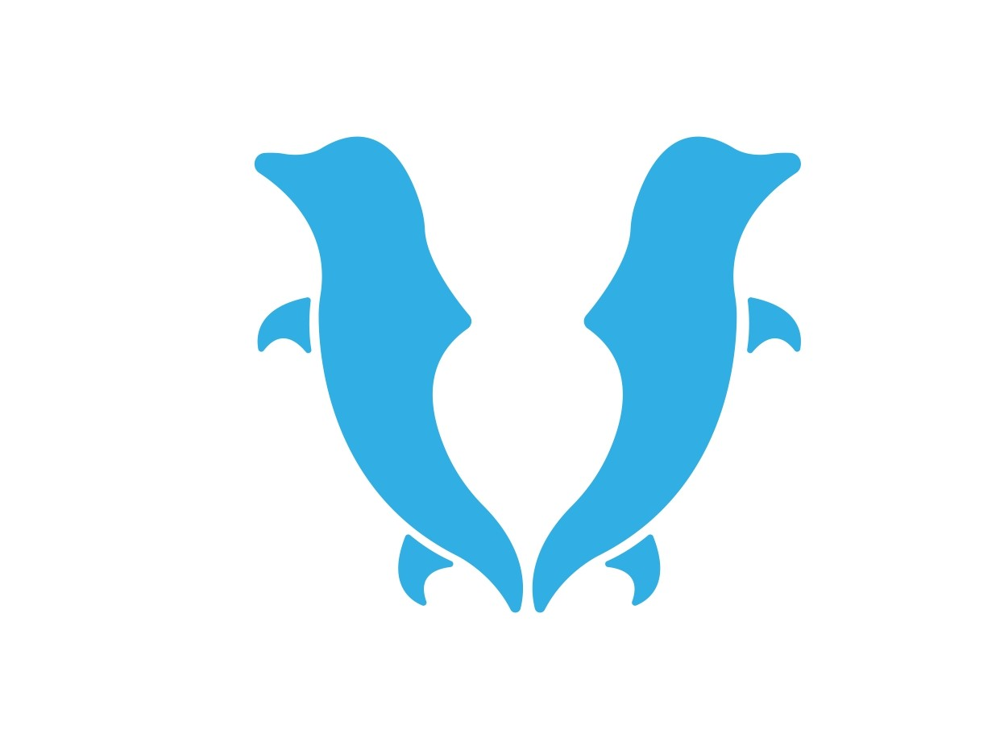

☰
Inicio
Ilustraciones a Color
Lineart
Diseño Vectorial
Blog
Diseño Vectorial

Blog
¿Qué hay detrás de cada diseño? En este espacio comparto el proceso que da vida a las ideas...
Blog
¿Qué hay detrás de cada diseño? En este espacio comparto el proceso que da vida a las ideas...


_pages-to-jpg-0001.jpg)